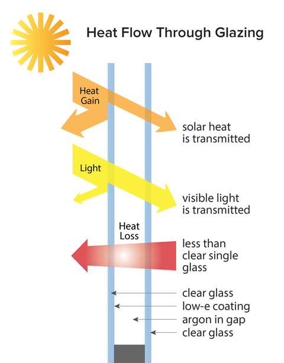

Ultraseal Glass Corp. is a leading company specializing in
high-performance insulated glass units in a range of products
to meet all of your architectural and performance criteria.
At Ultraseal Glass Corp., we work with our customers on an
individual basis, tailoring our products to match the needs
of each living space. We offer options and alternative glass
solutions to match every project, ensuring our clients are
able to make an informed choice to suit their needs.
Complementing this is our industry leading equipment, advanced
glass processing technology and the highest level customer
service, with a facility of more than 45,000 square feet to
serve our customer coast to coast.
The Ultraseal Glass difference

- Superior insulation compared to anything single-glazed
- Control solar heat gain
- Reduce heating and cooling energy waste
- Reduce heating and cooling energy costs
- Increase the size of your window/door without compromising performance
- Control visible light levels / glare factors
- Ultraviolet (UV) protection against fading factors
- Virtually eliminate internal condensation
- Superior acoustics versus any monolithic option
- High performance coated lowE options to meet energy efficiency
demands from building codes
U4 Technology
Adding U4 - 4th Surface Technology to your IGUs is a true game-changer.
You can improve your total window U-value performance by 0.04 or more, without changing
your manufacturing processes.
Now, you will be able to exceed new ENERGY STAR standards and still maintain your
competitive edge.
Options
Glass:
- Standard glass
AGC/Guardian float clear glass and clear LoE glass
- Tempered and laminated glass available
Spacers:
- Warm edge spacer
- Aluminum spacer
- Color options in stock:
- Light grey
- Black
- White
Special colors available upon request
Sealant:
- Polysulphide: Adapted to all types of glass
- Hot melt: Adapted for small to medium openings
Gas Fills:
- Argon
Lower conductivity insulates better than air
- Krypton
Lowest conductivity of any gas used
Grille Bar:
- Rectangular: 1/4" x 5/8", 1/4" x 5/16"
- Pencil bar
- Georgian bar
- Various color options available